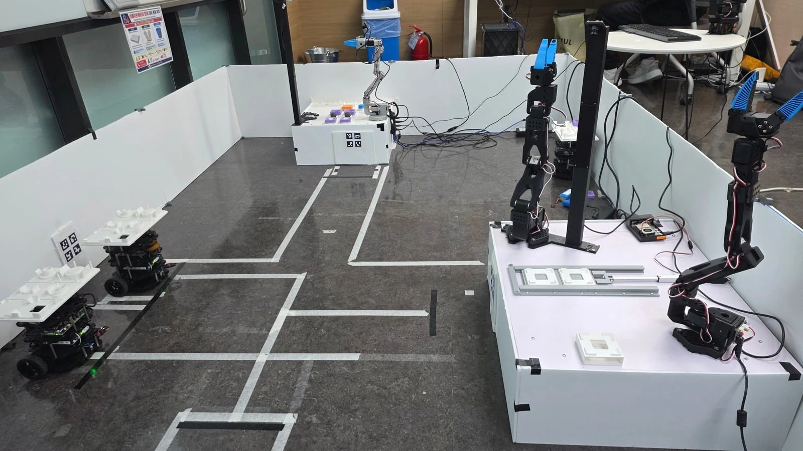

01 / AUTONOMOUS MOBILE ROBOT
개발 진행 중 · 1차 통합 시연 완료7s_FA
ROS 2 스마트팩토리 자동화
2026.09 – 진행 중7s_FA · 7인 팀
자재창고와 제작공정 사이를 이동하는 두 대의 AMR.
Nav2 목적지 주행, ArUco 정렬, IR 정지를 연결합니다.

제가 담당한 일
-
01지도와 웨이포인트 주행
SLAM 지도 작성과 Nav2 주행환경 구성. 목적지 위치와 방향을 설정하고, 실제 로봇에서 주행·접근 동작을 확인했습니다.
-
02ArUco + IR 정밀 도킹
4개 마커를 하나의 보드로 인식해 정렬하고, 최종 직진 중 IR 감지와 오도메트리 정지를 확인하는 도킹 흐름을 구현했습니다.
-
03ROS 2 통신과 실행 환경
Host와 운반로봇의 통신·실행환경을 구성하고, 로봇별 namespace와 설정을 분리했습니다.
SYSTEM ARCHITECTURE
Host PC주문 · 공정 순서 관리
목적지 명령 · 완료 결과 확인
목적지 명령 · 완료 결과 확인
ROS 2 Action · Goal / Feedback / Result
M1 / BURGER 1로봇 내부 Nav2 · AMCL
ArUco 정렬 · IR 정지
ArUco 정렬 · IR 정지
M2 / BURGER 2로봇 내부 Nav2 · AMCL
ArUco 정렬 · IR 정지
ArUco 정렬 · IR 정지
작업 결과주행 + 종단 동작 + 정지 확인 → 완료
각 로봇에서 Nav2 주행·도킹을 실행하고, Host에서 목적지 명령과 공정 순서를 관리합니다.
PROJECT FILM전체 공정 통합 시연